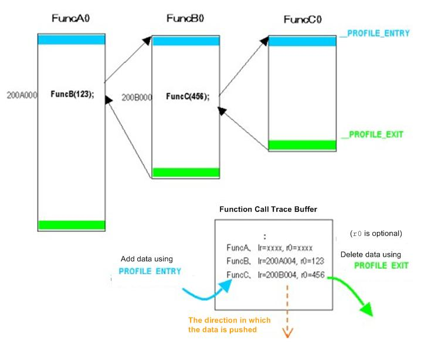

#include <nitro/os.h>void OS_InitCallTrace( void* buf, u32 size, OSCallTraceMode mode );
| buf | Buffer used for function call trace |
| size | Size of buffer used for function call trace |
| mode | Function call trace mode |
None.
Sets the buffer to be used for function call trace and begins the function trace.
After you call this function and function call trace has been set, trace status becomes Enable.( This is the status after the OS_EnableCallTrace function is called.)
In order for a function to be traced, it must be compiled with the profile feature ON. (When you compile with TWL_PROFILE=TRUE, at compile time the -profile option is attached, and the profile feature is ON.) When that code in which the profile feature is ON is mixed with code in which the profile feature is not ON, trace information is obtained only for the code in which the feature is ON.
To enable features that are related to function call trace, at link time you must include libos.CALLTRACE.a (in the thumb version, libos.CALLTRACE.thumb.a). To do this, specify TWL_PROFILE_TYPE=CALLTRACE as a make option. You may also write it in the makefile. However, in the final ROM version (FINALROM) library, it will not do anything.
Information used in tracing (sizeof(OSCallTraceInfo) - sizeof(OSCallTrace) bytes, which includes the buffer's end position, the current pointer, and so on) is stored in the front of the buffer buf. The rest of the buffer is filled with the trace information. If you are using a thread system, buffers are independent for each thread. Therefore, if you want to store trace information, you will have to define a separate buffer for each thread.
The trace mode mode specifies the method used for recording. When OS_CALLTRACE_STACK is specified, it gets a record at the entry point of functions in which the profile feature is ON and discards the record at the exit. This is called "stack mode." When OS_CALLTRACE_LOG is specified, it gets a record only at the entry point of functions in which the profile feature is ON. It does not discard the record at the exit. Using this, you can operate in a "log mode" in which a record is kept of past functions.
When the function is called, the size that is stored is sizeof(OSCallTrace) bytes. In stack mode, when a function call nest with a maximum of n loops is generated, the buffer size, size, must be at least sizeof(OSCallTraceInfo) - sizeof(OSCallTrace) + sizeof(OSCallTrace)*n bytes. Log mode uses the buffer as a ring buffer. Therefore, a buffer of the size in the expression shown above is able to attach n records.
Now we will describe the operating principle in detail. When the profile feature is ON, __PROFILE_ENTRY and __PROFILE_EXIT codes that call functions are appended at a function's entry and exit points, respectively. The TWL-SDK uses them to get information (the return address and, optionally, arguments) in the function at the time it was entered at __PROFILE_ENTRY, and place this information in a buffer. In stack mode, it discards the most recently acquired information at __PROFILE_EXIT. In log mode, information is not discarded at __PROFILE_EXIT.
The following diagram describes the operation in stack mode.

To display the information that is in the function call trace buffer, call either the OS_DumpCallTrace or OS_DumpThreadCallTrace function.
(Example)
#define BUFFER_SIZE 0x400
u32 traceBuffer[ BUFFER_SIZE/sizeof(u32) ];
OS_InitCallTrace( traceBuffer, BUFFER_SIZE, OS_CALLTRACE_STACK );
:
:
OS_DumpCallTrace();
OS_DumpCallTrace
OS_DumpThreadCallTrace
2009/03/04 Corrected formula for necessary buffer size.
2004/06/02 Changed the description of the make option.
2004/05/19 Added a description of the make options.
2004/04/22 Added a description of the stack mode and the log mode.
2004/04/13 Initial version.
CONFIDENTIAL